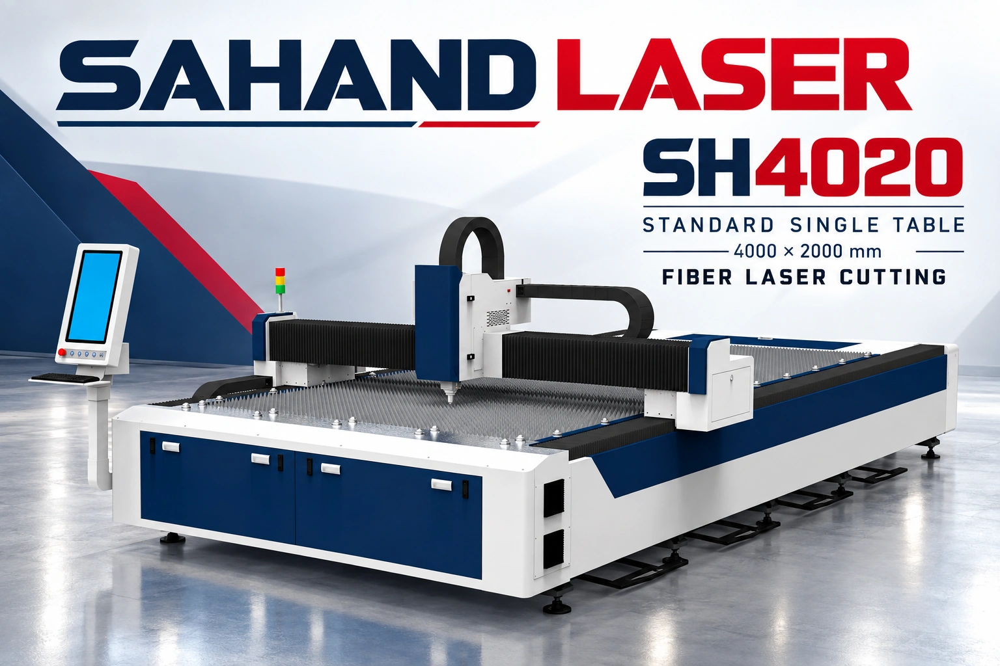

خطوط نوری کاملاً CSS، کارتهای صنعتی و حرکت شناور محدود؛ جلوهٔ قوی بدون فایل ویدئویی سنگین.

برش، جوش، مارکینگ و تمیزکاری.
هستهٔ انرژی و کنترل دقیق حرکت.
انتقال و تمرکز پرتو برای هر فرایند.
نصب، آموزش و تعمیرات تخصصی.